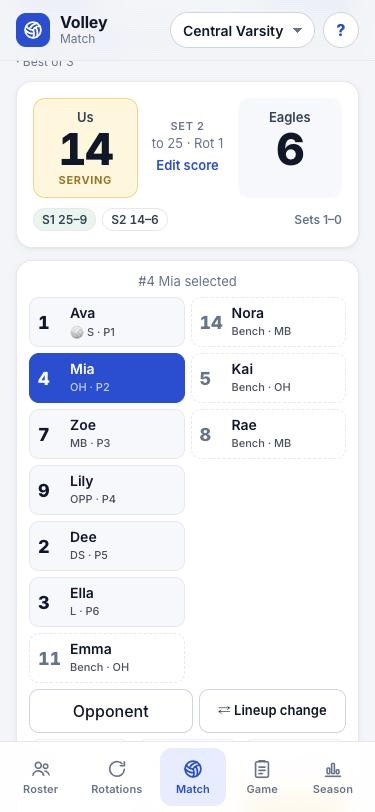
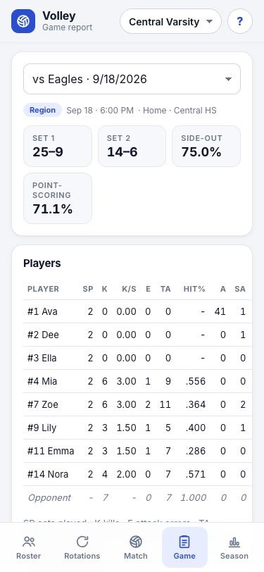
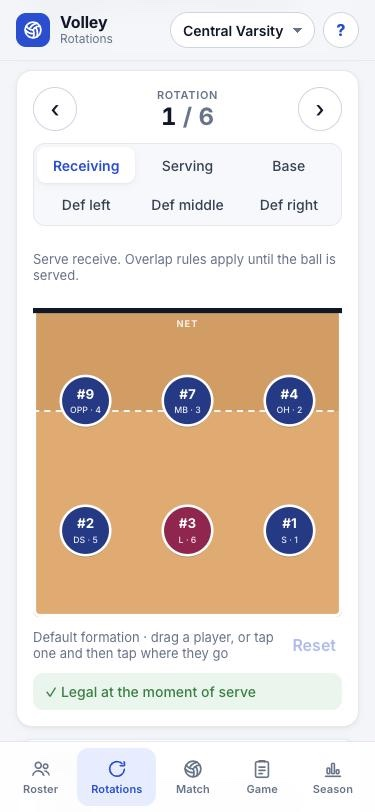
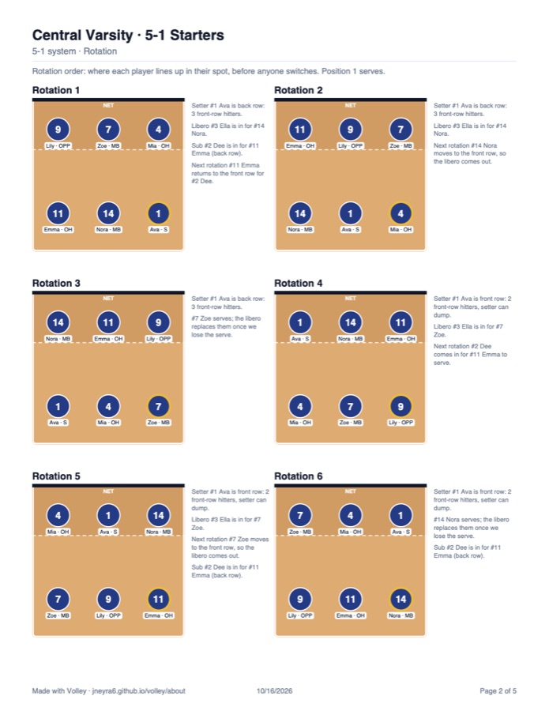

Volleyball rotations and live stats, on your phone.
Set up your rotations, track every point during the match, and upload your stats to MaxPreps in seconds. Made for high school and club coaches.
- Works offline in the gym
- No account or sign-up
- Your stats stay on your device

Live stats in two taps
Pick a player, tap the action twice to confirm, and keep your eyes on the court.
- Kills, aces, blocks, digs, assists, passes and serves with 0–3 ratings
- Error details: serve into the net or out, attacks blocked or out, Whose ball?
- Opponent stats, timeouts, undo and redo, and mid-set substitutions
- Best of 3 or 5, with region, tournament and scrimmage games tracked separately

Rotations that make sense
Run a 5-1, 6-2 or 4-2. Volley knows when the libero comes in, who sets, and when your DS subs for an outside.
- Serve receive, serving, base and defense formations for all six rotations
- Drag players into place, or tap a player and then the spot
- Overlap check tells you if a formation is legal at the serve
- Save rotations and start matches from them

Send rotations to your players
Make a PDF with your lineup and every rotation, then share it straight to your team chat or email.
- Rotation order, serve, serve receive and base pages, plus defenses if you want
- Names, numbers and positions on every diagram
- Notes on the libero, subs and who sets in each rotation

MaxPreps and season reports
Export a game in MaxPreps' import format, or a spreadsheet for your athletic director.
- Game reports with sets played, per-set stats, hitting %, pass and serve ratings
- Season totals and records by match type, with scrimmages kept out
- Side-out and point-scoring percentages, and results by rotation
Jersey, sets played, serves, aces, serve errors, serving points, attacks, kills, attack errors, receptions, blocks, assists and digs, ready to import into each game.
Add Volley to your phone
It installs from your browser in a few seconds. No app store needed.
iPhone or iPad
- Open this page in Safari and tap Open Volley.
- Tap Share, then Add to Home Screen, then Add.
- Open Volley from the new icon from now on.
Android
- Open this page in Chrome and tap Open Volley.
- Tap Install on the banner, or open the menu (⋮) and tap Install app.
- Open Volley from your home screen.
Questions
Is Volley free?
Yes. Everything on this page is free to use.
Where are my teams and stats saved?
On your phone or tablet. Nothing is sent to a server and there's no account. Use Save backup on the Roster tab to keep a copy or move everything to another device.
Does it work without internet?
Yes. Once it's on your Home Screen, Volley works offline, so a weak gym signal won't stop you from keeping stats.
How do I get my stats into MaxPreps?
In the Game tab, tap MaxPreps file to save a .txt file, then import it into that game on MaxPreps. Jersey numbers need to match your MaxPreps roster.
Which rotation systems does it support?
5-1, 6-2 and 4-2, with a libero and planned subs such as a defensive specialist for an outside hitter.